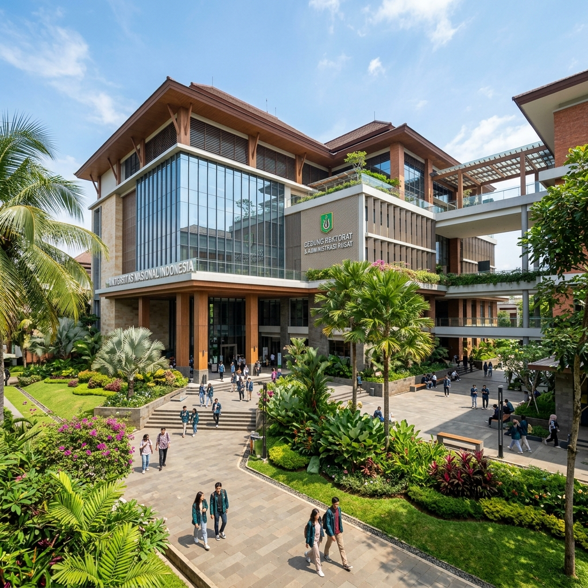

Universitas Subang Buka 3 Program Studi Baru Berbasis Digital

SUBANG - Merespon kebutuhan industri di era digital dan revolusi industri 4.0, Universitas Subang (UNSUB) secara resmi mengumumkan pembukaan tiga program studi baru yang akan mulai menerima mahasiswa pada tahun akademik 2026/2027.
Ketiga program studi tersebut adalah S1 Sains Data, S1 Bisnis Digital, dan D4 Keamanan Siber. Keputusan ini diambil setelah melalui proses kajian mendalam bersama mitra industri dan mendapatkan izin resmi dari Kementerian Pendidikan, Kebudayaan, Riset, dan Teknologi.
Mencetak Talenta Digital Unggul
Rektor Universitas Subang menyatakan bahwa inisiatif ini merupakan bagian dari visi transformasi universitas. "Kita tidak bisa lagi hanya mengandalkan kurikulum konvensional. Data dari berbagai lembaga riset menunjukkan adanya gap yang besar antara kebutuhan industri terhadap talenta digital dengan ketersediaan lulusan perguruan tinggi saat ini," ujarnya dalam konferensi pers yang digelar Selasa (11/8/2026).
"Program studi baru ini dirancang tidak hanya untuk membekali mahasiswa dengan teori, tetapi 70% kurikulumnya akan berbasis proyek nyata (project-based learning) yang berkolaborasi langsung dengan mitra perusahaan teknologi."
Fasilitas dan Beasiswa Khusus
Untuk mendukung pembelajaran pada tiga prodi baru ini, UNSUB telah membangun dua laboratorium komputasi canggih berkinerja tinggi (High-Performance Computing) dan satu pusat simulasi keamanan siber (Cybersecurity Range).
Selain itu, universitas juga menyediakan skema beasiswa "Talenta Digital Masa Depan" berupa pembebasan biaya kuliah hingga 100% bagi 50 pendaftar pertama yang lolos seleksi dengan nilai memuaskan.
Informasi Pendaftaran Program Studi Baru:
- Pendaftaran Gelombang 1: 1 September - 30 November 2026
- Jalur Seleksi: Undangan (Prestasi), Ujian Tulis Berbasis Komputer (UTBK), dan Portofolio.
- Link pendaftaran: pmb.unsub.ac.id/digital
Dengan dibukanya program studi ini, UNSUB berharap dapat berkontribusi signifikan dalam memenuhi kebutuhan sumber daya manusia (SDM) berkualitas tinggi yang siap bersaing di pasar global, sekaligus mendorong inovasi teknologi di daerah Subang dan sekitarnya.